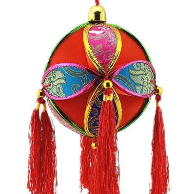
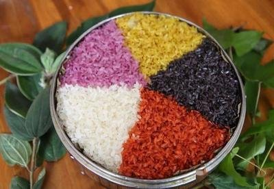
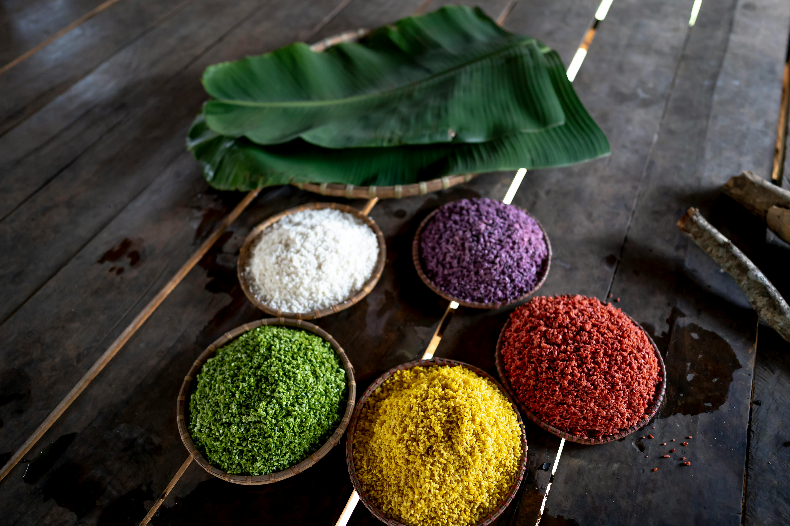
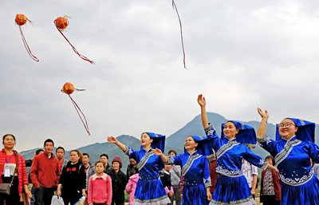

🎤 歌仙刘三姐
相传唐代，壮乡有一位女子名叫刘三姐，她天生一副好嗓子，出口成歌。财主不许百姓唱山歌，刘三姐就带领乡亲们用歌声反抗，吓得财主节节败退。
每年三月三，人们便聚在歌圩上，用对歌来纪念这位歌仙，也用以传情、择偶、赛智慧。
歌海壮乡情

加载中...把染料拖到饭团上，做出你的吉祥五彩饭吧！
相传唐代，壮乡有一位女子名叫刘三姐，她天生一副好嗓子，出口成歌。财主不许百姓唱山歌，刘三姐就带领乡亲们用歌声反抗，吓得财主节节败退。
每年三月三，人们便聚在歌圩上，用对歌来纪念这位歌仙，也用以传情、择偶、赛智慧。
传说古时壮家英雄出征，妻子用红兰草、蝶豆花、枫叶等植物染出五色米，祈求平安归来。后来演变成三月三必吃的美食。
五色象征：红（兴旺）、黄（丰收）、蓝（健康）、紫（吉祥）、黑（驱邪）。吃一碗五色饭，全年顺耐（壮语：顺利）。
抢花炮被称为"东方橄榄球"，一声炮响，铁环飞向空中，各村壮汉蜂拥争抢，抢到者象征得到整年的好运。
抛绣球则是青年男女的传情方式，姑娘若看上哪个小伙子，就把绣球抛给他，接住便是缘分。
2014年，"壮族三月三"被列入国家级非物质文化遗产。如今每到这一天，广西全区放假，人们穿上盛装，赶歌圩、尝美食、祭祖先。
—— 欢迎来广西，一起体验歌海壮乡的春天！
想去广西体验三月三？这份攻略带你玩转歌海壮乡！
来广西过三月三，这些地道美食不容错过！

用红兰草、蝶豆花、枫叶等天然植物染色，象征吉祥如意。这是三月三最具代表性的美食。

用艾草汁和糯米制成，清香软糯。三月三踏青采艾，做成糍粑，是春天的味道。

"一杯苦，二杯涩，三杯四杯好油茶。" 搭配炒米、花生、葱花，是广西人待客的暖身茶饮。
竹竿一开一合，看准时机让舞者跳过去！夹到脚就输了！
| # | 名字 | 得分 | 关卡 |
|---|
暂无记录，快来挑战吧！
前方高台少女抛绣球，和伙伴们一起抢！看谁先抢到！
五道选择题，全对解锁隐藏壮锦壁纸！
告诉我想法，AI 帮你生成专属三月三行程！
对三月三之旅有疑问？欢迎留言，我们会尽快回复！